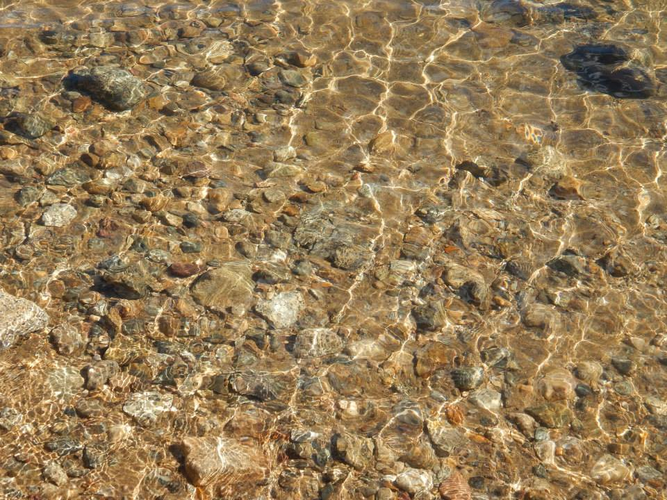

<!DOCTYPE>
<html>
	<head>
		<meta charset="utf-8">
		<title>Awsum Stones</title>
		<!--css style sheet-->
		<link rel="stylesheet" href="css/style.css">
		<!--google font-->
		<link href='http://fonts.googleapis.com/css?family=Fjalla+One' rel='stylesheet' type='text/css'>
	</head>

	<body>
		<div id="page">
		<!--this is where the info will show up-->

		<script type="text/x-handlebars">
			<section class="pageClass">
				<header>
					<a href="#"><h1>Stone Flavors of the Month</h1></a>
				</header>
				<nav>
					<a href="#/turquoise">Turquoise</a>
					<a href="#/malachite">Malachite</a>
					<a href="#/labradorite">Labradorite</a>
					<a href="#/rainbowMoonstone">Rainbow Moonstone</a>
				</nav>

				<!--***this is where the info from the routes will show up***-->

				<main class="mainClass">{{outlet}}</main>
				
			</section>
			<footer>
				<small>Ember by Joanna Lacey</small>
			</footer>	
		</script>
		
		<!--
	    ====================================================
	    "HOME" PAGE TEMPLATE: displays the Home page content 
	    ====================================================
		  -->
	    <script type="text/x-handlebars" data-template-name="index">
		    <section id="home" class="pageClass">
		      <h2>Lets Talk Stones</h2>
		      <h3 class="homepageHeader">Checkout Our Top Picks of the Month!</h3>
		      
		      <p>What is your Favorite Stone? How much do you really know about these minerals you use in your jewelry designs? This month we put a spotlight on Turquoise, Malachite, Labradorite and Rainbow Moonstone. These beauties happen to be a lot more interesting than you may have though. Be sure and let your customers know all about these fabulous minerals they will be wearing too! Be sure and check back every month for our new featured stones!</p>
		    </section>
		</script>

		<!--
    ====================================================
    "TURQUOISE" PAGE TEMPLATE: displays the Turqiouse page content 
    ====================================================
	  -->

	  	<script type="text/x-handlebars" id="turquoise">
			<section id="turquoise" class="pageClass">
			    <h2>Turquoise</h2>
			    
			    <p>
			    	Turquoise is a blue to gray-green mineral consisting of copper aluminum phosphate. The mineral is a hyrous phosphate of aluminum, which includes a small percent of copper. The copper is what gives the mineral its blue coloring. When the turquoise mineral is associated with iron, that’s when you get the greenish turquoise. If the mineral contains zinc, the turquoise mineral will be a yellowish color.
			    </p>
			    <p>
			    	The mineral turquoise is formed by a chemical reaction which occurs when water containing specific minerals such as copper and aluminum leak through a rock. It forms in veins, which later then turn into a clump of turquoise.
			    </p>
			</section>
		</script>

		<!--
    ====================================================
    "MALACHITE" PAGE TEMPLATE: displays the Malachite page content 
    ====================================================
	  -->

  	<script type="text/x-handlebars" id="malachite">
		<section id="malachite" class="pageClass">
		    <h2>Malachite</h2>
		    
		    <p>
		    Malachite is a very popular mineral with its intense green color and beautiful banded masses. The banded specimens are formed by massive, botryoidal, reniform, and especially stalactitic Malachite that are dense intergrowths of tiny, fibrous needles. Dense banded specimens are often sliced and polished to bring out their beautiful coloring. The bands may consist of concentric rings with interesting patterns; such specimens are highly sought after. These concentric banded specimens are most commonly from African sources. Polished, banded Malachite has been carved into ornaments and worn as jewelry for thousands of years, and in some ancient civilizations it was thought to be a protection from evil if worn as jewelry.
		    </p>
		    <p>
		    	Malachite is generally found together with blue Azurite, and sometimes the two may occur admixed or banded together, forming what is commonly known in the gem and mineral trade as "Azure-Malachite". Malachite may also replace Azurite crystals, retaining the original Azurite shape but chemically altering it. - See more at: http://www.minerals.net/mineral/malachite.aspx#sthash.Yr4bla3r.dpuf
		    </p>
		</section>
	</script>

	<!--
    ====================================================
    "Labradorite" PAGE TEMPLATE: displays the Labradorite page content 
    ====================================================
	  -->

  	<script type="text/x-handlebars" id="labradorite">
		<section id="labradorite" class="pageClass">
		    <h2>Labradorite</h2>
		    
		    <p>
		    Labradorite is a feldspar mineral of the plagioclase series that is most often found in mafic igneous rocks such as basalt, gabbro and norite. It is also found in anorthosite, an igneous rock in which labradorite can be the most abundant mineral. 
		    </p>
		    <p>
		    Some specimens of labradorite exhibit a schiller effect, which is a strong play of iridescent blue, green, red, orange, and yellow colors as shown in the photographs above and at right. Labradorite is so well known for these spectacular displays of color that the phenomenon is known as “labradorescence.” Specimens with the highest quality labradorescence are often selected for use as gemstones. 
		    </p>
		</section>
	</script>

	<!--
    ====================================================
    "Rainbow Moonstone" PAGE TEMPLATE: displays the Rainbow Moonstone page content 
    ====================================================
	  -->

  	<script type="text/x-handlebars" id="rainbowMoonstone">
		<section id="rainbowMoonstone" class="pageClass">
		    <h2>Rainbow Moonstone</h2>
		    
		    <p>
		    Rainbow moonstone is transparent labradorite, a closely related feldspar mineral with sheen in a variety of iridescent colors. Although it’s technically not moonstone, it’s similar enough that the trade has accepted it as a gem in its own right. Today some people prefer it to traditional moonstone.
		    </p>
		</section>
	</script>


		</div> <!--end of page div-->

		<script src="js/libs/jquery-1.10.2.js"></script>
		<script src="js/libs/handlebars-1.1.2.js"></script>
		<script src="js/libs/ember.min.js"></script>
		<script src="js/app.js"></script>
	</body>
</html>